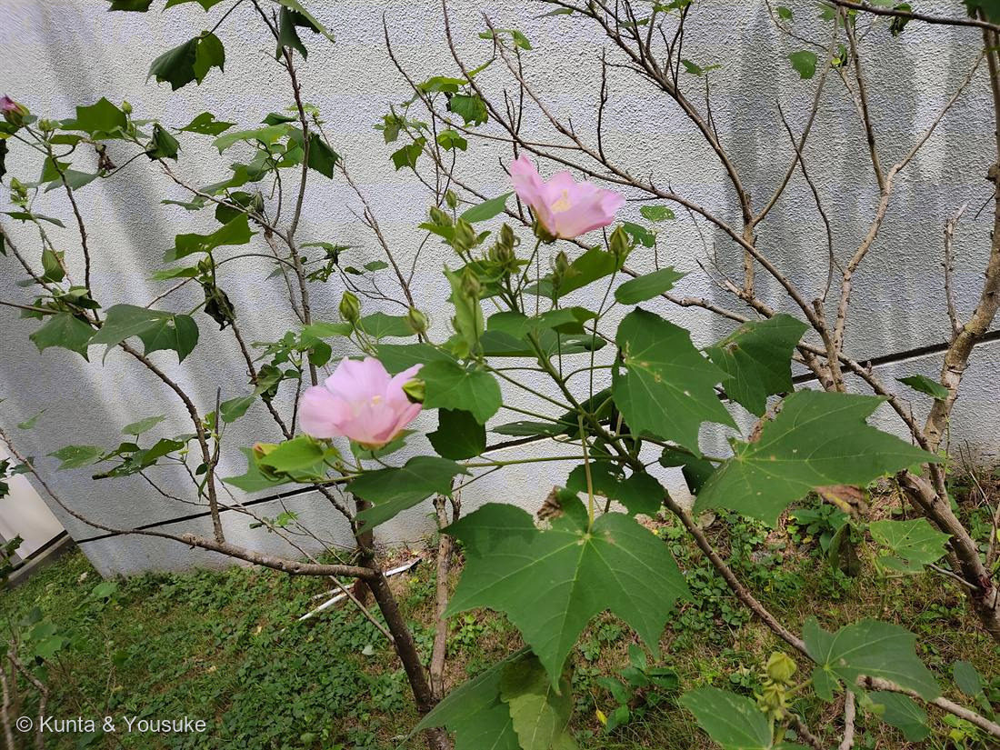

スイフヨウ（酔芙蓉）
Hibiscus mutabilis L. f. versicolor
f. versicolor ＝「色とりどりの」／038 フヨウと同じ種
アオイ科 · Malvaceae（フヨウ属）
燻太さんの読み「色づきを見るに、昼頃だね」……正確。そしてその一言が、この花がスイフヨウであることの証明になっている。
一日で、色が変わる ── 時計がなくても、花の色で時刻がわかる
- 朝 … 真っ白
- 昼 … 淡いピンク ← この写真（12:56）
- 夕方 … 紅（濃いピンク〜赤）
- 翌朝 … ねじれてしぼみ、落ちる
- 酔って顔が赤くなるように色づくから「酔芙蓉」。名前が、そのまま観察記録になっている。学名の f. versicolor ＝「色とりどりの」。
色が変わるしくみ ── そして 027 ニオイバンマツリの、ちょうど逆
- 色の正体はアントシアニン。
- 朝に開いた時点では、アントシアニンがほとんどない。だから白い。
- 日中、光と温度をきっかけにアントシアニンが合成され、花びらにたまっていく。だから昼は淡いピンク、夕方は紅。
- 一日で、色素がゼロから作られていく。花びらの中で化学反応が進んでいくのを、目で見ている。
- ⭐027 ニオイバンマツリを思い出して。あの子は 紫 → うすい紫 → 白。アントシアニンが抜けていく方向だった。
スイフヨウは、その真逆。白 → 桃 → 紅。アントシアニンがたまっていく。
同じ図鑑のなかに、色素が「減っていく花」と「増えていく花」が、両方いる。
⭐⭐ 2枚の写真が、たがいの証拠になっている
- この写真（039）：12時56分 ── すでに淡いピンク。昼の時点で、もう染まりはじめている。
- あちらの写真（038 フヨウ）：15時06分 ── まだ純白。午後3時をすぎて、なお白い。
- ⭐遅い時刻のほうが白く、早い時刻のほうが色づいている。——これは「変わる花」と「変わらない花」でなければ、起こらない。
- つまり、この2枚は、たがいが相手の証明になっている。039は「色が変わる」ことの証拠であり、038は「変わらない花もいる」ことの証拠。どちらか一枚だけでは、どちらも言い切れなかった。
- 🔍見分けの結論：白いフヨウを見たら、時刻を見る。朝なら判断できない（スイフヨウの朝かもしれない）。午後になっても白ければ、それは白花のフヨウ。
038 フヨウ（白花）との関係 ── 同じ種、ちがう生き方
- 学名を見て。038 も 039 も、どちらも Hibiscus mutabilis。同じ種。
- 038（病院の前の白花）：ずっと白いまま。変わらない。（燻太さんが何年も見てきた観察）
- 039（この子）：一日で白から紅へ変わる。
- 同じ種なのに、生き方がちがう。種小名 mutabilis ＝「変わりやすい」はこの一族の性質を指している——けれど、全員が変わるわけではない。
この植物のこと
⚠ 物語は、まだ半分
- この図鑑には、いま「昼の色」しかない。
- 朝の白と、夕方の紅が、まだない。
- 同じ花を、朝と夕方に撮ってきてほしい。そうすれば 朝・昼・夕の3枚が並んで、一日の物語が完成する。
- → 「探してみたい」リストのスイフヨウは「みつけた ✓」になったけれど、宿題はまだ残っている。